|
点查看器
|
点查看器（见图 1）用于为样品栅格定义点。在点列表中定义的点上，处理脚本序列器可以在系统自动将样品移动到列表中的下一点之前执行。点可以手动编辑或从 .CSV 文件或 SP1 KLARF 1.2 文件导入。如果您需要不同文件格式的导入功能，请联系 WITec。
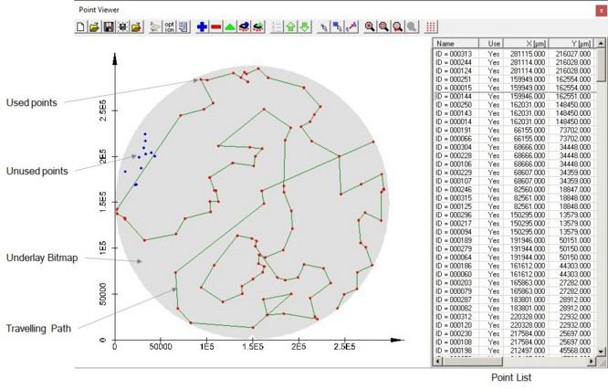
图 1：点查看器窗口，显示菜单栏、样品区域和点列表。窗口中标注了一些功能。
下面将首先介绍菜单栏和快速按钮的功能，然后概述样品区域。随后将描述点列表和上下文菜单。
快速按钮
点查看器窗口的菜单栏中提供了以下快速按钮：
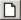
新建点列表按下此快速按钮将创建新的点列表。现有点列表将被删除。
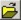
打开点列表此功能启动 Windows 标准的 WITec 点列表文件（*.wpt）打开对话框。使用此对话框可以打开已保存的点列表。保存的点列表文件还包含位图底图以及样品和位图坐标。之前打开的点列表将被关闭。
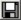
保存点列表此菜单功能允许保存点列表。如果是新列表，将打开另存为对话框。
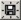
点列表另存为此功能类似于保存点列表功能，同时提供更改文件名的可能性。
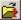
导入 SP1 KLARF 1.2 文件此功能允许导入以 SP1 KLARF 1.2 文件格式保存的数据。之前打开的点列表将被关闭。位图底图以及样品和位图尺寸在内部定义，并为导入过滤器自动设置。
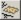
定义样品尺寸和底图位图此快速按钮打开样品尺寸和位图底图对话框，如图 2 所示。
此对话框可用于加载位图（.BMP 格式），该位图用作点查看器窗口样品区域的背景。对话框允许定义样品区域以及位图在其中的大小和位置。在图 2 中，样品区域定义为 200 µm x 200 µm，位图定义在样品区域的左上角，如图 2 背景中的点查看器所示。
位图应尽可能位于目录 C:\ProgramData\WITec\WITec Suite X.X\Configs\WITec Control\PointViewerBackgrounds 中，因为这是搜索位图的标准目录。
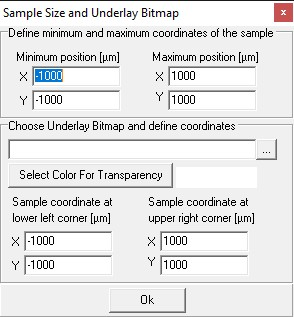
图 2：样品尺寸和位图底图对话框窗口
在此窗口中可以修改以下条目：
最小位置 [µm] X/Y
应在此输入坐标系内样品的最小位置。更改此处输入的值后，左下角位图坐标的相应字段将更改为相同的值。
最大位置 [µm] X/Y
应在此输入坐标系内样品的最大位置。更改此处输入的值后，右上角位图坐标的相应字段将更改为相同的值。
底图位图
应在此处输入或通过
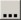
按钮选择包含底图位图的文件。选择透明色
此触发按钮打开颜色选择对话框，从中可以选择位图的透明色。此颜色将不会在样品区域中显示。当前选择的颜色显示在触发按钮的右侧。
左下角样品坐标 [µm] X/Y
这些字段在更改最小样品位置字段后自动填充，但也可以手动更改。可以在此输入位图左下角的坐标。关于输入坐标效果的说明，请参见图 2。此处底图位图显示在"定义样品尺寸和位图底图"对话框中输入的坐标位置。
右上角样品坐标 [µm] X/Y
这些字段在更改最大样品位置字段后自动填充，但也可以手动更改。可以在此输入位图右上角的坐标。关于输入坐标效果的说明，请参见图 2。此处底图位图显示在"定义样品尺寸和位图底图"对话框中输入的坐标位置。
选项
在选项对话框中（如图 3 所示），提供了点列表的导出和图形表示以及列表本身的 ASCII 导出参数。
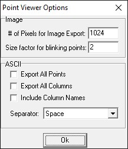
图 3：点查看器的选项对话框。
对于导出表示样品区域中点的图像，可以输入位图较大尺寸方向的像素数。导出图像较小侧边的尺寸将由当前视图的宽高比决定。
实际像素数可能因自动裁剪功能而有所不同，该功能会切除多余的白色边框。
闪烁点的大小因子是点在闪烁时放大和缩小的比例因子。样品区域中的闪烁表示点已被选中。
对于以 ASCII 格式导出点列表，提供以下选项：
导出所有点
如果选中此复选框，无论其使用状态（见下文）如何，所有点都将被导出。如果未选中，仅导出使用状态设置为是或已用的点。
导出所有列
如果选中此复选框，将导出所有列。否则仅包含通过上下文菜单（见下文）选中的列。
包含列名
此选择允许在导出的 ASCII 文件中包含列名。
分隔符
ASCII 导出可选择以下分隔符：
添加点
此快速按钮仅在点列表不是从 KLARF 文件导入而作为四列表手动定义时才激活。如果激活，则打开编辑点对话框，如图 4 所示。
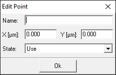
图 4：编辑点对话框。
可以在此选择点名称、X 和 Y 坐标（µm）以及状态。状态在上下文菜单部分中说明。
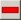
删除点 [Del]此按钮仅在有点被选中（在点列表中高亮显示）时才激活。按下此快速按钮将删除选中的点。
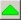
编辑点此按钮仅在选中一个手动定义的单个点时才激活。激活此快速按钮后，系统将打开编辑点对话框，如图 4 所示，并在上文添加点快速按钮中描述。
将当前位置添加到点列表
将样品定位器的当前位置作为新点。
用当前位置替换点
将选中点的位置替换为样品定位器的当前位置。
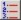
按顺序排序此按钮按点将执行的顺序对点进行排序。显示顺序可以通过例如按名称、使用状态或坐标排序显示来改变。
定义点或打开/导入点列表时，点的顺序就已确定。按名称、坐标或使用状态对点重新排序只会改变点的外观，而不会改变它们执行的顺序。此快速按钮再次按执行顺序显示点。
上移选中项 [Ctrl + U]
此按钮使选中的点在列表中上移。仅在列表按处理方式显示时才激活。
这会更改执行顺序。
下移选中项 [Ctrl + D]
此按钮使选中的点在列表中下移。仅在列表按处理方式显示时才激活。
这会更改执行顺序。
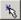
选择单点如果激活此按钮，可以通过在样品区域中点击从点列表选择单个点。选中的点将在样品区域中闪烁，并在点列表中高亮显示。按住 Ctrl 可以选择多个点。按住 Shift 将使该点被取消选择。此功能将保持激活状态，直到被停用（再次点击该按钮）或激活不同的鼠标功能。
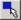
选择多个点如果选中此按钮，可以通过在样品区域中绘制矩形从点列表中选择多个点。选中的点将在样品区域中闪烁，并在点列表中高亮显示。按住 Ctrl 可以选择更多点。按住 Shift 将使该点被取消选择。此功能将保持激活状态，直到被停用（再次点击该按钮）或激活不同的鼠标功能。
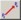
立即移动到选中的点此按钮允许将样品立即移动到选中的点。此功能仅在存在样品定位系统时才可用。激活后，系统将把样品移动到鼠标选中的点。可以点击样品区域中的图形表示或从点列表中选择点。此功能将保持激活状态，直到被停用（再次点击该按钮）或激活不同的鼠标功能。
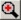
缩放如果选中此按钮，可以从样品区域选择一个缩放区域。此功能将保持激活状态，直到被停用（再次点击该按钮）或激活不同的鼠标功能。
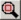
适合全部按下此按钮将显示整个样品区域。这是在定义底图位图和样品尺寸时以及加载新点列表后的标准视图。
缩放至上一个
此按钮返回到上次的缩放视图。
缩放至下一个
此按钮在缩放视图列表中向前移动一步（如果可用）。
创建点阵列
使用此对话框可以创建周期性的点分布。
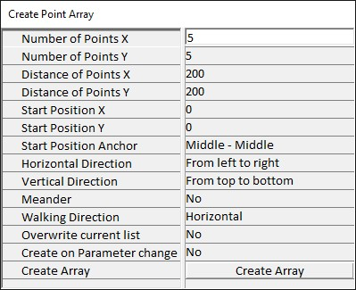
样品区域
样品区域可见于图 1 的左侧。此处显示位图底图以及点。此外，可以通过上下文菜单（见下文）显示显微镜的移动路径。
样品区域的可见部分包括：
坐标系
坐标系根据通过"定义样品尺寸和位图底图"对话框定义的样品尺寸进行缩放（见图 2）。
底图位图
通过"定义样品尺寸和位图底图"对话框选择的位图（见图 2）显示在相应的坐标位置。
点
显示的点：如果设置为是或已用则为红色，如果设置为否则为蓝色。
选中的点在样品区域中闪烁。
定义在样品区域之外的点不显示。
移动路径
仪器的移动路径以绿色显示，按处理顺序连接各点。仅连接设置为是的点。
移动路径可以通过上下文菜单（见下文）进行优化。
当前位置
仪器的当前位置以绿色十字线标示。
点列表
点列表的设置类似于电子表格，每行表示一个点。列数可能因使用的导入过滤器而异。然而，手动定义的点列表以及从 .CSV 文件导入的点列表仅包含四列：
名称 | 使用 | X [µm] | Y [µm]
这些列也是其他导入点列表中的前四列。显示的列可以通过上下文菜单（见底部）进行选择。点击列标题可以按列对列表排序（即按名称或使用状态）。
这不会改变点处理的顺序，仅改变它们在列表中的表示方式。使用上移选中项或下移选中项快速按钮来更改点的处理顺序。
如果选中了点，它们将沿整行标记。
上下文菜单
上下文菜单（如图 5 所示）可以通过在点查看器窗口中右键单击打开。
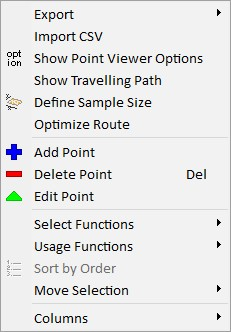
图 5：点查看器上下文菜单。
可通过上下文菜单使用的命令包括：
导出
导出菜单项允许将样品区域导出为位图，以及将点列表导出为 ASCII。导出的位图将复制到图形导出窗口。导出的 ASCII 数据将复制到剪贴板，然后可以粘贴到所需的文档中。导出功能使用选项对话框（见上文）中设置的设置。
导入 CSV
使用此菜单可以导入逗号分隔值数据（.CSV）。数据必须是三列 CSV 文件，第一列包含点名称，第二列包含 X 坐标（µm），第三列包含 Y 坐标（µm）（名称格式必须为字母数字，不含空格和特殊字符。X 和 Y 坐标可以带有 + 或 - 前导符号，点作为小数分隔符，可选的 'e' 或 'E' 表示指数后带符号整数。字符串不能包含千位分隔符）。
示例：
Pointname,10.4,-100
所有导入点的使用状态初始设置为是。
显示点查看器选项
此菜单项打开与选项快速按钮相同的对话框（见上文）。
显示移动路径
使用此菜单项可以打开和关闭移动路径的显示。
定义样品尺寸
此菜单项打开"定义样品尺寸和位图底图"对话框（见上文）。
优化路径
此菜单项自动优化移动路径，以最小化移动距离从而最小化移动时间。将弹出一个窗口通知用户由于点重新排序而导致的移动距离变化。
此过程不建议在测量期间执行，因为它可能需要大量处理能力。如果点列表包含超过 2000 个点，由于可能花费相当长的时间，软件会提示用户确认该任务。
添加点
此菜单项与添加点快速按钮具有相同的功能（见上文）。
删除点
此菜单项与删除点快速按钮具有相同的功能（见上文）。
编辑点
此菜单项与编辑点快速按钮具有相同的功能（见上文）。
选择功能
此菜单项允许选择所有点以及反转当前选择。
当前选中点的使用状态可以在此编辑。可用选项如下：
使用
在此点，一旦点列表被执行，处理脚本序列器将被执行。
不使用
系统在执行栅格时将忽略此点，不会移动到该点。
已用
系统在处理脚本在此位置执行后自动将标签为是的点设置为已用。
已用 -> 使用
此功能将当前选择中所有标记为已用的点更改为是。
当前选择中标记为否的点不会更改。
按顺序排序
此菜单项与按顺序排序快速按钮具有相同的功能（见上文）。
移动选择
此菜单项包含上移选中项和下移选中项两个条目，与相应的快速按钮相同（见上文）。
列
此菜单项包含点列表的所有列。在此菜单项中激活它们将在点列表编辑器中显示它们。